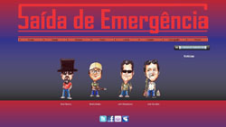
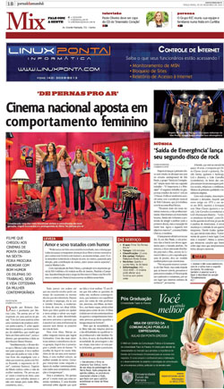
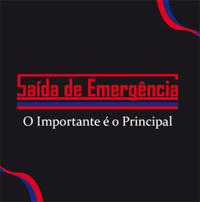
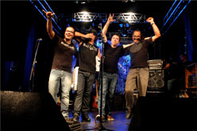
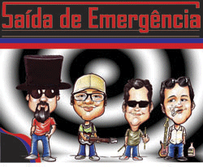

| |
|
|
|
18/01/11:
Participação do SDE na ALL TV |
|
A banda Saída de Emergência estará ao vivo hoje, 18/01 –
terça-feira, no programa Cadulaque, da ALL TV, das 22h às
23h.
www.alltv.com.br |
| |
|
.jpg) |
30/12/10: “Tribuna
do Paraná” também prestigia lançamento da banda “Saída de
Emergência” |
|
No último dia 28
de dezembro de 2010 o jornal “Tribuna do Paraná” publicou
matéria sobre o lançamento do CD “O Importante é o
Principal”, da banda “Saída de Emergência” em suas versões
impressa, com uma tiragem diária de mais de 20 mil
exemplares, e online.
Link da Versão
Online:
http://www.parana-online.com.br/colunistas/207/82741/
A versão impressa
pode ser observada na imagem ao lado. |
| |
|
|
 |
30/12/10: Venda do
CD “O Importante é o Principal” agora também pelo site
oficial da banda. |
|
Os fãs da banda
de rock “Saída de Emergência” têm mais uma opção para
comprar o CD “O Importante é o Principal”. Agora pelo site
oficial da banda por meio do email contato@saidamusic.com.br ou
pelos telefones 11 9745-8883 | 11 7596-5457 é possível
encomendar o álbum pelo mesmo valor das lojas de todo o
Brasil.
Site Oficial: www.saidamusic.com.br |
| |
|
|
 |
29.12.10 - Saída de
Emergência no “Jornal da Manhã”, de Ponta Grossa/PR |
|
O som da banda
Saída de Emergência é tão bom que já está atravessando as
fronteiras do Estado de São Paulo. O “Jornal da Manhã”, um
dos principais impressos da região do Paraná, com uma
tiragem que ultrapassa os 18 mil exemplares diários,
publicou matéria sobre o lançamento do CD “O Importante É O
Principal”, na edição do dia 28/12/10, na seção MIX. |
| |
|
|
 |
28.12.10 -
“Encabrestados F.C.” para download gratuito. |
|
O grupo “Saída de
Emergência” é a favor da democratização da cultura e é por
este motivo que disponibiliza em seu site oficial para
download gratuito o link da música “Encabrestados F.C.”,
para que os fãs possam conhecer a canção de trabalho. Com
certeza, ao ouvir essa canção vai dar muita vontade de ouvir
todas as outras do álbum “O Importante é o Principal”, de 13
faixas.
Clique no link
abaixo e faça download gratuito da canção, caso não funcione
basta colar o link no seu browser.
http://www.saidamusic.com.br/encabrestados.rar |
| |
|
|
 |
28.12.10 - O show
de lançamento foi sensacional |
|
No último dia
18/12 (sábado) a banda “Saída de Emergência” fez o show de
lançamento do CD “O Importante é o principal”. O público
presente ao Teatro ETA pode curtir um set list totalmente
autoral e um som excepcional sem ajuda de nenhuma
parafernália tecnológica, somente instrumentos, como os
músicos verdadeiros e experientes devem e sabem fazer.
Com Dino Chaves
no vocal e guitarra, Danilo Godoy na guitarra e back, Lok`s
na bateria e Petch Calasans, que também é produtor musical
da banda, no contrabaixo, o grupo tocou mais de uma hora um
rock como não se via no Brasil há mais ou menos duas
décadas. Após o show todos os integrantes da banda
interagiram com os fãs, jornalistas, amigos e
personalidades do mundo da música no halldo teatro, enquanto
todos saboreavam um delicioso coquetel. |
| |
|
|
|
13.12.10 - Saída de
Emergência na Rádio Transamérica |
|
A Rádio Transamérica 100,1 FM apresenta chamadas sobre o
show de lançamento do CD “O Importante É O Principal”, da
banda de rock “Saída de Emergência”, nos dias 16, 17 e
18/12/10. Portanto, os fãs desse grupo podem curtir um pouco
do som da banda em uma das mais importantes rádios do
Brasil. Tal resultado foi possível devido ao apoio cultural
da Milé Car MegaStore, que possuí 40 anos de experiência no
mercado automotivo, sendo uma das maiores e mais completas
concessionárias multimarca. | www.milecar.com .
Site Transamérica: http://www.transanet.com.br/sppop/
|
| |
|
|
|
08.12.10 - CD já a
venda na Livraria Cultura. |
O público em geral já pode adquirir o CD “O
importante é o Principal” da banda Saída de
Emergência. O produto, ou melhor, o som de primeira
qualidade já está disponível para vendas nos sites
da Livraria Cultura.
Acesse o site: www.livrariacultura.com.br
|
| |
|
|
|
07.12.10 - Show de
Lançamento dia 18/12 (Não aberto ao público). |
|
A banda “Saída de Emergência” faz show de lançamento do CD
“O Importante é o Principal” dia 18/12, às 21h, no Teatro
Eta localizado no bairro da Bela Vista em São Paulo. Os
convidados VIP`s podem esperar por muitas surpresas e música
de qualidade. |
| |
|
|
|
03.12.10 - Hits da
banda já estão na programação da rádio 98 FM A Rádio Rock |
|
Os fãs da banda “Saída de Emergência”já podem curtir na
programação da Rádio 98 FM a Rádio Rock, que cobre boa parte
do litoral sul de SP, dois hits do novo CD “O Importante é o
Principal”, são elas: “Encabrestado F.C.” e “Garoto Juca”.
E, é claro, para que as canções toquem cada vez mais na
programação àqueles que curtem um bom rock podem pedi-las
pelos seguintes meios:
Site:
www.aradiorock.com | Email:
ouvinte@aradiorock.com Telefone: 13 2104-5400
|
| |
|
|  |
23.11.2010 -
MySpace da banda Saída de Emergência já está em atualização |
|
A banda Saída de Emergência
procura sempre estar em sintônia com seu público, inclusive
com os que adoram se conectar a internet e redes sociais.
Por isso todos aqueles que gostam de acompanhar o MySpace,
uma rede social muito bem vista no meio musical, podem
passar a acessar o perfil da banda, pois já encontrarão por
lá muitas novidades, além de poder interagir com a banda por
tal meio.
http://www.myspace.com/saidadeemergenciasp |
| |
|
|
|
Saída de
Emergência lança CD |
|
A banda que está na estrada há mais de 08
anos lança um CD totalmente autoral. Rock da melhor qualidade do jeito que o
público gosta.
|
| |
|